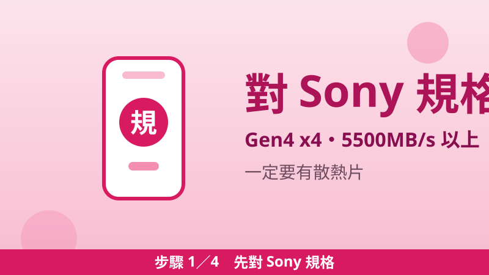
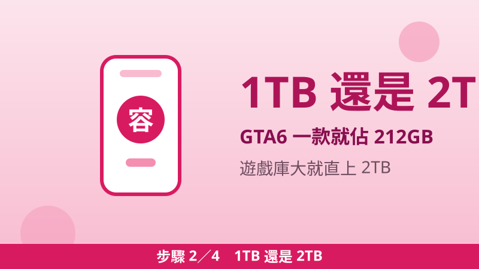

GTA6 PS5 擴充 SSD 怎麼挑最划算？Sony 規格、1TB vs 2TB、第一次加裝不用重下載
GTA6 一款遊戲就要安裝 212GB，PS5 內建容量很快就滿。想繼續玩又不想一直刪遊戲，擴充 SSD 是最直接的解法。這篇先講 Sony 官方規格怎麼對、1TB 和 2TB 怎麼選，再講第一次加裝怎麼把遊戲直接搬過去、不用重下載，以及手上已經有一條 SSD、想換更大條時要先做什麼。
Sony 官方規格：五項對齊再買
PS5 擴充只能走內建 M.2 插槽，外接 USB 硬碟只能存放 PS5 遊戲、不能直接從 USB 玩。買之前先對齊 Sony 官方要求的五項：
| 項目 | Sony 官方要求 | 買錯會怎樣 |
|---|---|---|
| 介面 | PCIe Gen4 x4 NVMe M.2（Key M） | SATA 的 M.2 裝了也不能用 |
| 容量 | 250GB～8TB | 低於 250GB 不支援 |
| 循序讀取 | 5,500MB/s 以上（建議值） | 太慢的遊戲載入會受影響 |
| 散熱機制 | 一定要有散熱片或導熱片等散熱結構 | 沒散熱片官方明確不建議使用 |
| 含散熱片厚度 | 11.25mm 以下（板上 8.0mm、板下 2.45mm） | 太厚蓋子蓋不回去 |
最保險的買法是直接買原廠散熱片版，不用自己另外加裝散熱片、也不用量厚度。Sony 也提醒：即使規格全數符合，也不保證每一款 SSD 都能在主機上正常運作，下單前可先看賣場評價、確認有其他 PS5 玩家裝過同一型號。
認得的型號：散熱片版怎麼分
| 型號（認散熱片版） | 最高讀取 | PS5 注意事項 |
|---|---|---|
| WD_BLACK SN850X 散熱片版 1TB（WDS100T2XHE）／2TB（WDS200T2XHE） | 7,300MB/s | 認末碼 XHE 才是散熱片版，無散熱片版是 X0E，買錯不能直接裝 |
| Samsung 990 PRO 散熱片版 1TB／2TB | 7,450MB/s | 散熱片版才符合 PS5 高度規範 |
兩款讀取速度都遠高於 Sony 建議的 5,500MB/s，差別主要在容量與當下賣場價。型號末碼對錯比品牌重要：同一系列有散熱片版和無散熱片版，結帳前務必再看一次商品名稱有沒有寫「散熱片版」。
1TB vs 2TB 怎麼選
- 只玩 GTA6 加幾款遊戲，選 1TB：GTA6 佔 212GB，1TB 扣掉系統與其他遊戲後，大約還能再裝 3–5 款大型遊戲。平常只玩 2–3 款遊戲的人，1TB 就夠用。
- 遊戲庫大、常同時裝很多 3A 大作，選 2TB：現在一款 3A 遊戲動輒 100GB 起跳，1TB 很快又要刪遊戲。2TB 一次買到位，省下以後再換一次的工。
- 還沒買 PS5 的人：PS5 Pro 內建 2TB（官方建議售價 $27,478），可以先不急著買 SSD，等真的不夠用再擴充。
怎麼算最划算，不是看每 GB 單價，而是看你會不會因為容量不夠又買一條：1TB 用一年就滿、再換 2TB，花的錢比一開始直上 2TB 更多。
四步驟：從挑規格到搬好遊戲

步驟 1先對 Sony 規格
確認 PCIe Gen4 x4、讀取 5,500MB/s 以上、容量 250GB～8TB、一定要有散熱片、含散熱片厚度 11.25mm 以下，五項全數對齊再下單。

步驟 2選容量
GTA6 一款就佔 212GB，只玩幾款遊戲選 1TB；遊戲庫大、常裝多款 3A 大作就直上 2TB，免得以後再換一次。
步驟 3第一次加裝直接搬
裝好新 SSD 並格式化後，內建儲存空間還在，M.2 是額外多出來的槽。把遊戲從內建搬到 M.2 就好，不用刪除、不用重下載。
步驟 4換大條先搬回家
手上已經有一條、想換更大條時，先把遊戲搬回內建儲存空間，內建放不下就暫存到 USB 外接硬碟，換上新 SSD 後再搬回來。
第一次加裝：內建還在、M.2 是額外槽
很多人以為加裝 SSD 是「換掉」內建硬碟，其實不是：PS5 內建儲存空間完全保留，M.2 插槽是額外多出來的一個槽。裝好新 SSD、開機格式化後，系統會多出一個儲存空間，遊戲可以在內建儲存空間和 M.2 SSD 之間直接移動，搬過去就能玩，不用重新下載 212GB。外接 USB 硬碟則不同：PS5 遊戲可以先存放在 USB 硬碟上，但要玩的時候必須先搬回內建或 M.2，不能直接從 USB 玩。
已經有一條、想換更大條：先搬、再換
如果 PS5 裡已經裝了一條 1TB，現在想換成 2TB，流程是反過來的：
- 先把舊 SSD 裡的遊戲搬回內建儲存空間；內建空間不夠，就先搬到 USB 外接硬碟暫存。
- 確認舊 SSD 裡沒有遊戲了，再關機、拆下舊 SSD。
- 裝上新的 2TB SSD，開機格式化。
- 把遊戲從內建（或 USB 外接硬碟）搬到新的 SSD，就能繼續玩，不用重下載。
重點只有一個：換下來之前，遊戲一定要先有地方去。直接拆掉舊 SSD 再裝新的，舊 SSD 裡的遊戲不會自動跟過來。
常見問題
Q：PS5 擴充 SSD 一定要有散熱片嗎？
A：是。Sony 官方要求一定要有散熱機制，例如散熱片加導熱片，沒有散熱片官方明確不建議使用。最省事是直接買原廠散熱片版。
Q：讀取速度低於 5,500MB/s 的 SSD 能裝嗎？
A：5,500MB/s 是 Sony 的建議值，不是硬性門檻，但低於這個速度的遊戲載入表現可能受影響。買之前先看商品規格頁的循序讀取數字。
Q：第一次加裝 SSD，GTA6 要重下載嗎？
A：不用。內建儲存空間還在，M.2 是額外槽，裝好格式化後直接把遊戲從內建搬到 M.2 就好。
Q：外接 USB 硬碟能不能直接玩 PS5 遊戲？
A：不能。PS5 遊戲只能從內建儲存空間或 M.2 SSD 直接遊玩，USB 外接硬碟只能存放，要玩必須先搬回來。
Q：為什麼這篇不寫 SSD 價格？
A：11 月 NAND 漲價劇烈，同一型號不同賣場、不同天的價差很大，本站查不到可驗證的台灣即時價，依上架鐵則不寫未驗證的價格，請以賣場頁面為準。
📎 資料來源
- PlayStation 官方支援「How to add an M.2 SSD to a PS5 console」（PCIe Gen4 x4、250GB～8TB、5,500MB/s 以上、散熱機制、11.25mm 厚度規範）：playstation.com
- 本站 GTA6 專區（GTA6 安裝 212GB、SN850X／990 PRO 散熱片版型號、PS5 Pro 官方建議售價 $27,478）：howkang.com.tw/gta6.html
最後查證日期：2026-11-18
免責聲明：SSD 規格以 Sony 官方公告為準；售價請以賣場頁面為準，本站不經手付款、不保證交易一定成立。